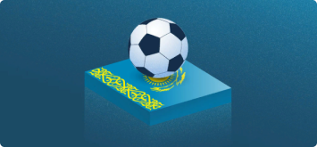

На что ставить в чемпионате Казахстана по футболу?

Блог Сергея Цаплина
9.03.22
15:20
Стартовал очередной сезон КПЛ. Ближайшие матчи — уже в четверг, 17 марта.
Чемпионат Казахстана на первый взгляд может показаться уж слишком нетипичным: турнир стартует весной и продолжается до осени (олдовые фанаты РПЛ помнят, что в России когда-то переход с этой системы на осень-весна восприняли в штыки), а за последние три года в стране было три разных чемпиона. Стартовавшему 5 марта розыгрышу чемпионата Казахстана есть чем привлечь любителей футбола из СНГ: экс-армейца Виктора Васина и «кыргызского Месси» Гульджигита Алыкулова в «Кайрате» тренирует Курбан Бердыев, в полузащите «Актобе» бегает Руслан Камболов, успевший сыграть пару матчей за сборную России, а «Атырау» в межсезонье подписал Анатолия Катрича, в своё время называвшегося одной из главных надежд московского «Динамо». Этакое кладбище самолётов из бывших звёзд российского футбола.
Однако казахстанский футбол может быть интересен не только со спортивной точки зрения, во многом благодаря отдельным личностям, но и с позиции беттинга.
Расскажем о нескольких вариантах ставок на КПЛ в сезоне-2022, которые прошли проверку временем. Некоторые из них, кстати, уже сыграли в двух прошедших турах.
Свежая кровь
Интересный факт: за последние четыре года КПЛ по итогам сезона покинул лишь один клуб, поднявшийся из Первой лиги, — в 2018 году «лифтом» воспользовался «Кызыржар». Справедливости ради стоит отметить, что в 2020-м «Каспий» остался в высшей лиге только благодаря банкротству «Иртыша», но факт остаётся фактом — девять из десяти новичков последних четырёх лет (в 2021 году КПЛ расширилась, поэтому в чемпионат поднялись сразу четыре клуба) закрепились в «вышке» как минимум на два сезона.
Отсюда возникает логичная теория — раз новички остаются в высшей лиге, значит, очки набирают стабильно, а потому ставки на их победу в теории могут оказаться профитными.
Проверим предположение на практике: ставить будем на победу во всех матчах КПЛ последних четырёх сезонов, кроме очных — их логичнее пропустить, дабы не выдумывать, на кого из новоприбывших ставить.
54

5

2

500

Интересный материал?
45 голосов
30 да 15 нет
Поделиться:


Другие статьи автора:
На что ставить в чемпионате Казахстана по футболу?
Блог Сергея Цаплина
9.03.22
15:20
На что ставить в чемпионате Казахстана по футболу?
Блог Сергея Цаплина
9.03.22
15:20